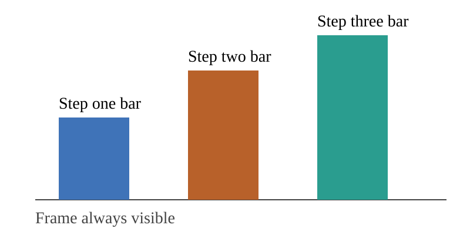

Early text shown only in steps one and two
Late text from step three onward

Tiny twelve pixel text
Small sixteen pixel text
Footnote at sixteen pixels
| Row one stays visible |
| Row two |
| Row three |
| Row four |
| Row five is cut off |
| Row six is cut off |
Short body text
The estimate is x^
Appendix sixteen pixel text
Appendix twelve pixel text